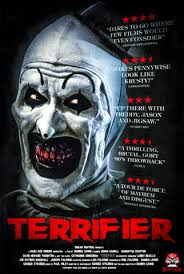
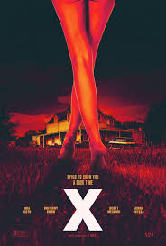
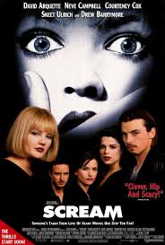
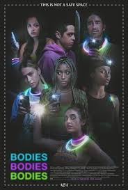
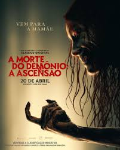

Enquanto cuida de duas crianças no halloween, uma babá encontra uma antiga fita VHS no saco de doces. O filme apresenta três contos de terror, todos ligados entre si por um palhaço assassino. Ao longo da noite, coisas estranhas começam a acontecer na casa e a presença do palhaço parece cada vez mais real.
Um grupo de atores se propõe a fazer um filme adulto na zona rural do Texas, sob o nariz de seus anfitriões reclusos. Quando os donos do local pegam seus jovens convidados no ato, o elenco se vê em uma luta desesperada por suas vidas.
Um grupo de jovens enfrenta um assassino mascarado que testa seus conhecimentos sobre filmes de terror. A pequena cidade de Woodsboro nunca mais será a mesma.
Um grupo de jovens planeja uma festa durante um furacão em uma mansão numa ilha remota. A celebração se torna mortal quando um assassino começa a eliminá-los, um por um.
Mia é uma viciada em drogas que, para vencer seus demônios pessoais, vai com seu irmão David, a namorada do irmão, Natalie, e os amigos de infância Olivia e Eric até uma cabana rústica, que pertence à família. Assim que chegam, descobrem que a cabana foi invadida e que o porão parece uma espécie de altar, rodeado por animais mumificados, onde a descoberta de um Livro dos Mortos invoca forças demoníacas. A presença do mal os possui até que apenas um é deixado a lutar pela sobrevivência.
